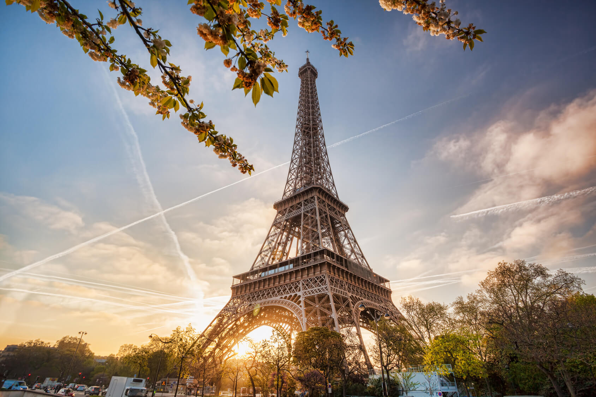

As lutas de gladiadores e simulações de caça com animais ferozes estão no imaginário de todos os que estudaram ou simplesmente assistiram filmes sobre o Império Romano.
O Coliseu, cujo nome oficial é Anfiteatro Flaviano, começou a ser construído em 72 d.C e demorou oito anos para ficar pronto. A construção, de concreto e areia, foi comandada pelo imperador Flávio Vespasiano – homenageado pelo filho Tito, que governava Roma quando as obras acabaram.
Na época, serviu à conhecida política do “pão e circo” do Império Romano, oferecendo espetáculos para distrair a população.
Ao visitar hoje o local, símbolo de Roma e da história da civilização, os turistas podem entender como funcionava esse imenso anfiteatro com capacidade para cerca de 70 mil pessoas, com seus caminhos subterrâneos, rampas e alçapões.
Recomendamos que garanta seu ingresso para o Coliseu com antecedência e evite filas.
Endereço: Piazza del Colosseo, Roma, Itália
Como chegar: metrô – descer na estação Colosseo da linha B
Horário de funcionamento: aberto todos os dias, a partir das 9h30. O horário de fechamento é às 18:30, sendo a última entrada às 18:15
Preço: Ticket inteiro Coliseu-Fórum-Palatino: 16€; Ticket reduzido: 2€ (cidadãos da UE com idades entre 18 a 25 anos); gratuito: menores de 18 anos
Como não pensar na Torre Eiffel ao planejar uma ida à Europa? A construção de cerca de 300 metros de altura e dez mil toneladas que se tornou símbolo da capital francesa é capaz de dar um ar romântico a qualquer viagem.
A Torre Eiffel foi construída para a Exposição Universal de 1889, que celebrava os 100 anos da Revolução Francesa. Uma competição de design arquitetônico selecionou o projeto do engenheiro Gustave Eiffel, que projetou o monumento como arco de entrada da exposição, no Champ de Mars.
De cada um dos andares – e, principalmente, do alto da torre – os visitantes têm uma vista especial de Paris, e vale repetir a visita durante o dia e à noite, pois a experiência é única em cada momento.
A fila para subir neste que é um dos principais pontos turísticos na Europa é grande e chega a duas horas de espera, caso você não compre a entrada com antecedência. Também recomendamos que você garanta os ingressos para a Torre Eiffel com antecedência para evitar filas e complicação.
Se a Cidade Luz não seria a mesma sem a Torre Eiffel, seu tour pela França também não estará completo sem esse passeio nas alturas. Mas não sem antes caminhar pelas margens do Rio Sena e o Campo de Marte para tirar a tradicional foto com essa maravilha arquitetônica ao fundo.
Endereço: Champ de Mars, 5 Avenue Anatole, Paris, França
Como chegar: de metrô – as estações mais próximas são a Bir-Hakeim (linha 6) e École militaire (linha 8). Alguns turistas preferem acessar pela estação Trocadéro, de onde é possível ver a Torre pelo outro lado do Sena
Horário de funcionamento: aberta todos os dias. No verão, as visitas podem ser feitas das 9:30h às 22h30. Nos demais dias do ano, o horário é um pouco reduzido: das 9h30 às 17h30
Preço: Ingresso inteiro para subir de elevador até o topo: 26,10€; Jovens (12 a 24 anos): 13,10€; Crianças (4 a 11 anos) e pessoas com deficiência: 6,60€; Bebês: gratuito Você pode ver algumas dicas que vão
Em construção há 135 anos, a Sagrada Família deve ficar pronta somente em 2026, mas há muito tempo atrai visitantes de todo o mundo, que enfrentam filas intermináveis para conhecer a edificação.
A basílica que se tornou um dos principais pontos de visitação para quem vai à Barcelona começou como um projeto neogótico de Francisco de Paula del Villar e Lozano.
A pedra fundamental da igreja foi lançada em 1882 e, no ano seguinte, a edificação passou para as mãos de Antoni Gaudí, arquiteto catalão reconhecido mundialmente por seus trabalhos originais e cheios de criatividade.
Endereço: Carrer de Mallorca, 401, Barcelona, Espanha
Como chegar: de metrô: basta pegar as linhas 2 ou 5 e descer na estação Sagrada Família
Horário de funcionamento: abre todos os dias, a partir das 9h às 18h
Preço: entrada e audioguia: 26€; entrada com visita guiada: 27€